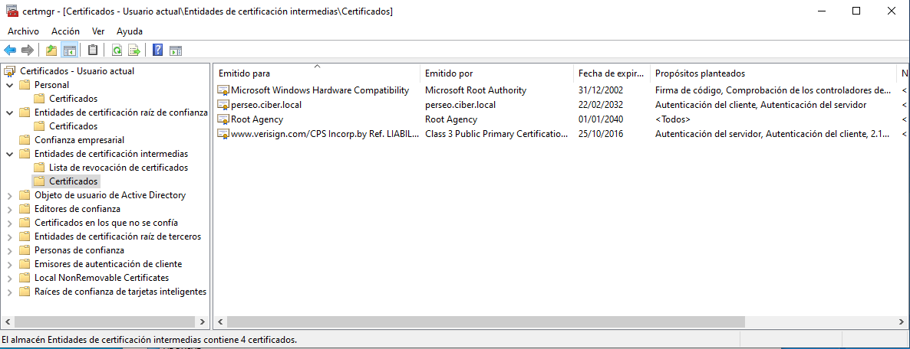

3.3.4 Acceso a la infraestructura por usuario suplicante
1. Introducción
Para probar la infraestructura que se ha instalado y configurado en los anteriores capítulos, se incorpora un cliente windows 10 que será el que utiliza el usuario suplicante. El equipo no tiene porqué estar integrado en el domino aunque lo habitual es que el equipo esté integrado.
2. Importación del certificado de servidor
Cargar certificado
En primer lugar hay que copiar el certificado que se exportó en un apartado anterior. A continuación, se hace clic con el botón derecho del ratón y se selecciona "Instalar certificado".
Instalar certificado
Una vez se ha pulsado en instalar, aparecer un Asistente de importación de certificados para agregar el certificado a los certificados raíz de confianza en el equipo. En primer lugar, se elige que la ubicación del almacén sea en el equipo local y se pulsa 'Siguiente'. A continuación, se selecciona que windows seleccione de manera automática el almacén de certificados aunque se podría elegir otra ubicación, hay que pulsar 'Siguiente'. Por último, hay que pulsar Finalizar y en unos segundos aparecerá un diálogo informando que la importación se realizó correctamente si se ha tenido éxito.
Comprobar certificado importado
Si se accede al almacén Entidades de certificación intermedias, se puede comprobar que el certificado se ha importado correctamente.

Mover certificado
Si se desea, se puede mover el certificado importado al almacén de certificados de confianza.
{kind=link}
{kind=link}
La importación del certificado también se puede realizar desde powershell donde hay que indicar en qué almacén se desea incorporar el mismo.
PS C:\ Import-Certificate -CertStoreLocation Cert:LocalMachineAuthRoot -FilePath C:\certs\radius-WAP2.cer
3. Conectividad a la red Wifi
En un equipo Windows 10 Enterprise se va realizar la conexión a la red inalámbrica mediante el usuario user01wlan que pertenece al grupo radius-WAP2 que se configuró en el capítulo 3.3.2. Dado que el usuario es el único miembro del grupo, sólo él podrá realizar una conexión inalámbrica.
En primer lugar, se busca la red inalámbrica que se ha implantado, en este caso, TP-LINK_Radius y se pulsa sobre ella. Aparecerá las cajas de diálogo para que se introduzcan las credenciales del usuario del dominio (Figura 1), en este caso, el usuario es: user01wlan@ciber.local. Si se pulsa Aceptar, comienza el proceso de autenticación en el servidor Radius (Figura 2),
| Figura 1. Acceso a la red TP-LINK_Radius. | Figura 2. Proceso de autenticación. |
Si la autenticación ha tenido éxito, ya se tiene el equipo/usuario en la red de la organización (Figura 3).
Figura 3. Conexión a la red inalámbrica establecida.
Si se accede a la conexión inalámbrica que se acaba de establecer, se puede observar que, se ha obtenido una ip, dns y gateway del servidor dhcp del controlador del dominio (el rango configurado en el servidor dhcp va de 192.168.0.150-192.168.0.180). También informa del canal y banda de la red así como su velocidad. También se informa del protocolo de autenticación utilizado: EAP protegido (PEAP). Por último, el sufijo principal es el dominio ciber.local.
Figura 4. Datos de la conexión inalámbrica.
Si se comprueba la configuración tcp/ip del equipo, se puede observar que se ha obtenido una ip del servidor dhcp del controlador del dominio además del gateway y dns.
Figura 5. Configuración tcp/ip del equipo conectado a la red inalámbrica.
Por último, dado que estamos en la red de la organización, se puede utilizar el recurso de salida a internet.

Figura 6. Navegación en la web del equipo.
Obra publicada con Licencia Creative Commons Reconocimiento No comercial Compartir igual 4.0